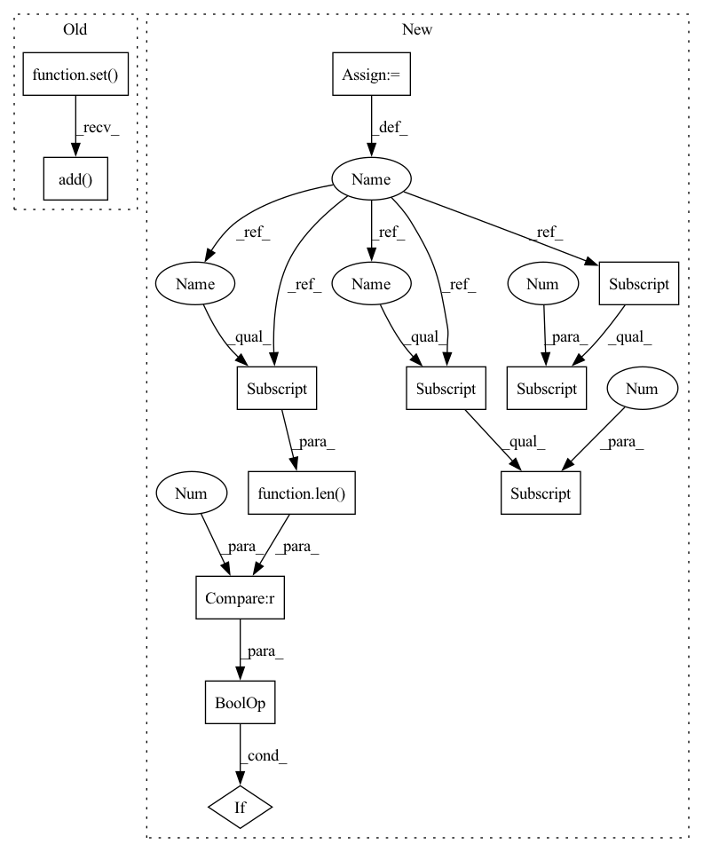

Pattern ID :11808
Before Change
if not token_list:
continue
if mode == "predict":
predict_results.setdefault(reverse_categories[predicate1], set()).add( tokenizer.decode(token_list))
else:
predict_results.setdefault(predicate1, set()).add(str(token_list))
break
return predict_resultsAfter Change
predict_results = {}
encode_results = tokenizer(text, padding="max_length")
input_ids = encode_results.get("input_ids")
token = tokenizer.convert_ids_to_tokens(input_ids)
mapping = rematch(text, token)
token_ids = torch.unsqueeze(torch.LongTensor(input_ids), 0).to(device)
attention_mask = torch.unsqueeze(torch.LongTensor(encode_results.get("attention_mask")), 0).to(device)
bert_hidden_states = bert_model(token_ids, attention_mask=attention_mask)[0].to(device)
model_outputs = model(bert_hidden_states).detach().to("cpu")
decision_threshold = float(configs.decision_threshold)
for model_output in model_outputs:
start = np.where(model_output[:, :, 0] > decision_threshold)
end = np.where(model_output[:, :, 1] > decision_threshold)
for _start, predicate1 in zip(*start):
for _end, predicate2 in zip(*end):
if _start <= _end and predicate1 == predicate2:
if len(mapping[_start]) > 0 and len(mapping[_end]) > 0 :
start_in_text = mapping[_start][0]
end_in_text = mapping[_end][-1]
entity_text = text[start_in_text: end_in_text + 1]
predict_results.setdefault(predicate1, set()).add(entity_text)
break
return predict_resultsIn pattern: SUPERPATTERN
Frequency: 3
Non-data size: 12
Instances Fragment ID: 39651132
Project Name: stanleylsx/entity_extractor_by_binary_tagging
Commit Name: 1c416e467a4fe62bbb0c8e086ef29dc6ece9b207
Time: 2020-09-01
Author: lishouxian@lishouxiandeMacBook-Pro.local
File Name: engines/predict.py
M Class Name: AnonimousClass
N Class Name: AnonimousClass
M Method Name: extract_entities(6)
N Method Name: extract_entities(7)
M Parent Class:
N Parent Class:
M File Name: engines/predict.py
N File Name: engines/predict.py
M Start Line: 7
M End Line: 35
N Start Line: 14
N End Line: 33
Before Change
if not token_list:
continue
if mode == "predict":
predict_results.setdefault(reverse_categories[predicate1], set()).add( tokenizer.decode(token_list))
else:
predict_results.setdefault(predicate1, set()).add(str(token_list))
break
return predict_resultsAfter Change
predict_results = {}
encode_results = tokenizer(text, padding="max_length")
input_ids = encode_results.get("input_ids")
token = tokenizer.convert_ids_to_tokens(input_ids)
mapping = rematch(text, token)
token_ids = torch.unsqueeze(torch.LongTensor(input_ids), 0).to(device)
attention_mask = torch.unsqueeze(torch.LongTensor(encode_results.get("attention_mask")), 0).to(device)
bert_hidden_states = bert_model(token_ids, attention_mask=attention_mask)[0].to(device)
model_outputs = model(bert_hidden_states).detach().to("cpu")
decision_threshold = float(configs.decision_threshold)
for model_output in model_outputs:
start = np.where(model_output[:, :, 0] > decision_threshold)
end = np.where(model_output[:, :, 1] > decision_threshold)
for _start, predicate1 in zip(*start):
for _end, predicate2 in zip(*end):
if _start <= _end and predicate1 == predicate2:
if len(mapping[_start]) > 0 and len(mapping[_end]) > 0 :
start_in_text = mapping[_start][0]
end_in_text = mapping[_end][-1]
entity_text = text[start_in_text: end_in_text + 1]
predict_results.setdefault(predicate1, set()).add(entity_text)
break
return predict_results Fragment ID: 39651102
Project Name: stanleylsx/entity_extractor_by_binary_tagging
Commit Name: 1c416e467a4fe62bbb0c8e086ef29dc6ece9b207
Time: 2020-09-01
Author: lishouxian@lishouxiandeMacBook-Pro.local
File Name: engines/predict.py
M Class Name: AnonimousClass
N Class Name: AnonimousClass
M Method Name: extract_entities(6)
N Method Name: extract_entities(7)
M Parent Class:
N Parent Class:
M File Name: engines/predict.py
N File Name: engines/predict.py
M Start Line: 7
M End Line: 35
N Start Line: 14
N End Line: 33
Before Change
if metadata is not None:
logger.error(f"Incorrect metadata for {uid}: {metadata}")
continue
valid_entries = set()
for maybe_peer_id, _unused_value in metadata.value.items():
try:
valid_entries.add( PeerID.from_base58(maybe_peer_id))
except:
logger.error(f"Incorrect peer entry for {uid}: {maybe_peer_id}")
if valid_entries:
modules[i] = RemoteModuleInfo(uid, valid_entries)After Change
for peer_id, server_info in metadata.value.items():
try:
peer_id = PeerID.from_base58(peer_id)
server_info = server_info.value
if not (isinstance(server_info, tuple) and len(server_info) == 2 and
isinstance(server_info[0], int) and isinstance(server_info[1], float)) :
raise ValueError(f"Invalid server info for uid={uid}, peer_id={peer_id}: {server_info}")
state, throughput = server_info
servers[peer_id] = ServerInfo(ServerState(state), throughput) Fragment ID: 39651125
Project Name: bigscience-workshop/distributed-bloom
Commit Name: aba43f1308cba044b6c107f15c329725eb601130
Time: 2022-07-12
Author: hxrussia@gmail.com
File Name: src/dht_utils.py
M Class Name: AnonimousClass
N Class Name: AnonimousClass
M Method Name: _get_remote_module_infos(4)
N Method Name: _get_remote_module_infos(4)
M Parent Class:
N Parent Class:
M File Name: src/dht_utils.py
N File Name: src/dht_utils.py
M Start Line: 112
M End Line: 115
N Start Line: 133
N End Line: 142